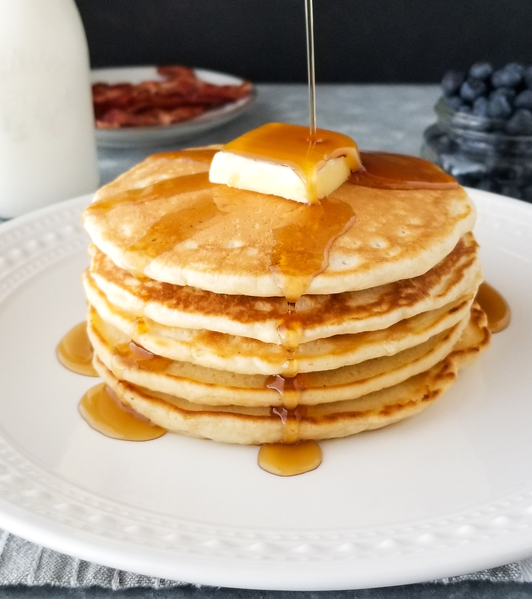
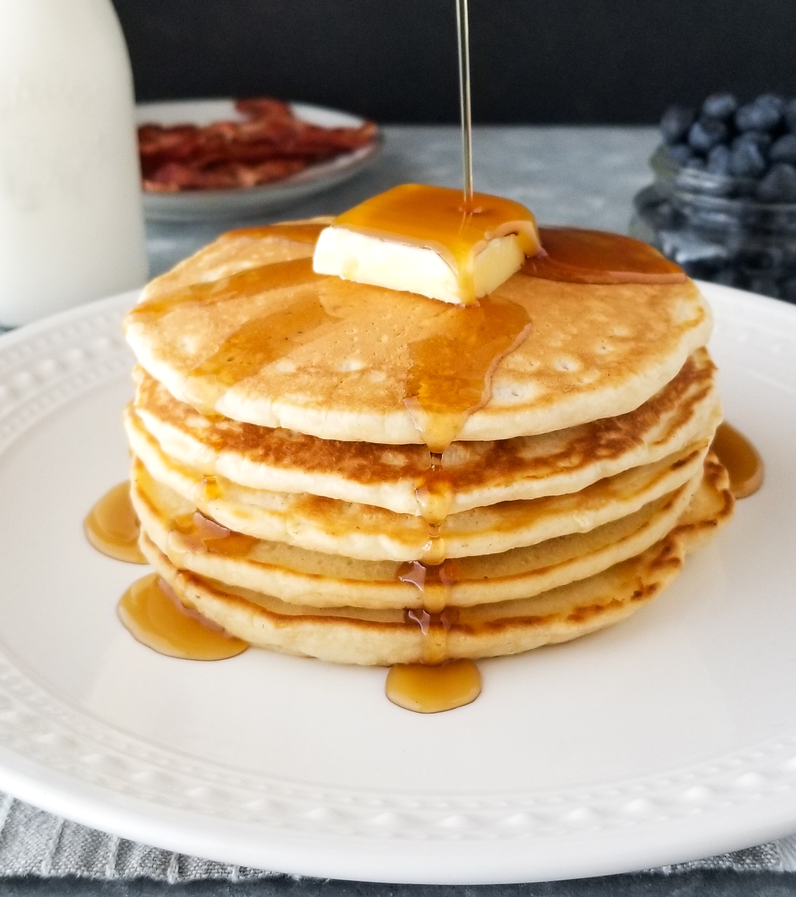

A pancake is a thin, flat, circular piece of cooked batter made from milk, flour, and eggs. Pancakes are often rolled up or folded and eaten hot with a sweet or savoury filling inside. In America, pancakes are usually eaten for breakfast, with butter and maple syrup.
Your pancake will tell you when it's ready to flip. Wait until bubbles start to form on the top and the edges look dry and set. This will usually take about two to three minutes on each side.